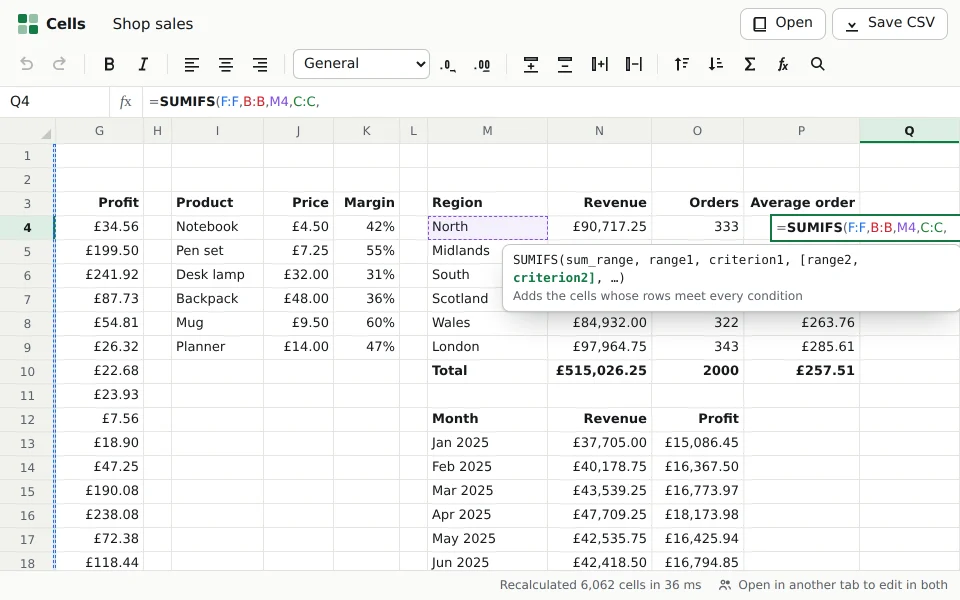

product · about 4 min · The Product Archipelago
Cells
A spreadsheet written from scratch: 116 functions, formulas that recalculate only what changed, a grid of 1,048,576 rows, Excel's keyboard, and live editing across tabs.
The problem
A spreadsheet is the most used app in any office, and the hardest kind of interface to build: a million rows, a formula language, and keys that hands already know.
Evidence
209 unit tests, among them a property test that every cell equals a plain evaluator after any sequence of edits; 16 end-to-end tests on a desktop and a phone. A 100,000-formula chain recalculates in 133 ms, down from 681. Read its tests

What it does
- 116 functions with Excel's rules, from SUMIFS and XLOOKUP to dates and text
- Point at cells while typing a formula; every reference gets its own colour on the grid
- Fill, sort, insert rows, cut and paste, and every formula follows; edit in two tabs at once
The most interesting decision
Recalculate only what changed, and do the graph work on typed arrays
Every formula's references are indexed, so a change finds what is downstream in one walk, and Tarjan's algorithm orders it and finds circular references in the same pass. Profiling showed maps keyed by cell were most of the cost, because a key past row 65,536 is too big for V8's small integers: moving the walk onto typed arrays and onto the formulas themselves took a 100,000-formula chain from 681 ms to 133.
Built with
- React 19 + TypeScript (strict)
- Vite
- Pratt parser and evaluator for Excel formulas
- Dependency index + Tarjan ordering
- Virtualised ARIA grid
- BroadcastChannel + IndexedDB
- Vitest + fast-check + Playwright + axe